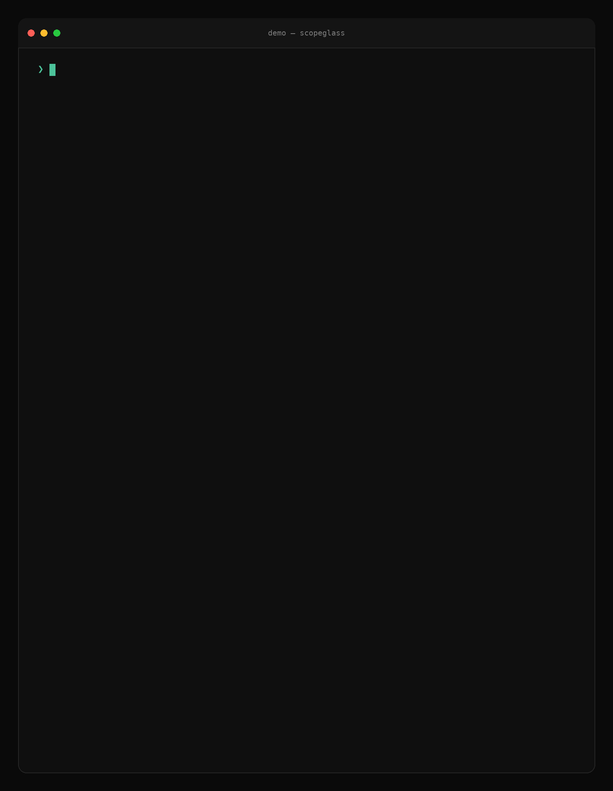

One command, the whole chain
A monorepo with a symlinked root AGENTS.md → CLAUDE.md and a nested package file. One scopeglass check shows everything an agent inherits — and why this tree fails CI.
- Scopes, root → target. The chain in the precedence order agents accumulate it, with per-file token estimates. The symlinked root file is followed and attributed.
- Instructions with provenance. The rule text leads; section,
file:line, kind, and precedence sit beneath it. - Deterministic diagnostics. A reference to a deleted style guide, the same rule billed twice, and use pnpm vs never use pnpm — each with both sources cited.
- The gate.
--fail-on info --max-tokens 60trips both policies: result FAILED, exit code 1.

What you get
Three renderers — terminal, versioned JSON, and a self-contained static HTML report — all fed by one deterministic analysis.
Total visibility
The full root→target chain in the exact precedence order agents accumulate it. Symlinked AGENTS.md → CLAUDE.md layouts included.
Line-level provenance
Every instruction carries its file and line, so "why did the agent do that?" has a lookup instead of a guess.
Honest context cost
Exact UTF-8 bytes plus a transparent, named token estimate — never a pretend tokenizer.
Duplicates & conflicts
Narrow, deterministic heuristics flag repeated rules and opposite-polarity guidance, always showing both sources.
Reference checking
Broken or root-escaping relative links inside instruction files become error diagnostics before an agent trips on them.
CI-ready gate
Stable exit codes, inclusive severity thresholds, token budgets, and JSON Schema-versioned output.
Make it a build gate
Stop instruction rot before it merges: fail on broken references or a blown context budget.
# CI scopeglass check src --fail-on error --max-tokens 8000 # exit 0 pass · 1 policy failure · 2 unsafe/unreadable input
{
"kind": "scopeglass-report",
"schemaVersion": 1,
"rulesetVersion": 2,
"tokenEstimate": { "method": "utf8-bytes-div-3", … }
}
Local by construction
- No network requests, model calls, telemetry, or plugins
- Never executes or imports repository content
- Bounded reads with symlink and containment validation
- Terminal output neutralizes ANSI and CI workflow-command injection
- Static HTML reports: no JavaScript, restrictive CSP, inert links
- Byte-deterministic output — no timestamps, no absolute host paths
Instruction files are treated as hostile input. Read the full threat model — including what it deliberately does not defend against.